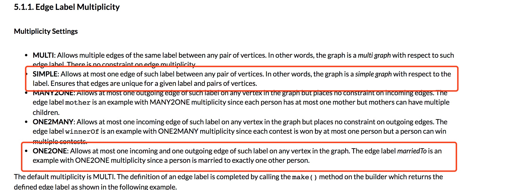
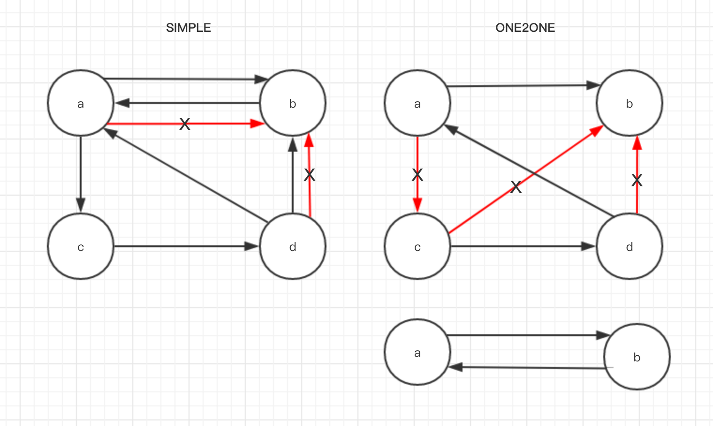

昨天在读 Titan 文档关于边的多样性时看到两个设置，分别是 SIMPLE 和 ONE2ONE，这两个设置的介绍有点绕，我琢磨了很久，最终通过程序弄明白了这两种模式的区别。

SIMPLE: Allows at most one edge of such label between any pair of vertices. In other words, the graph is a simple graph with respect to the label. Ensures that edges are unique for a given label and pairs of vertices.
ONE2ONE: Allows at most one incoming and one outgoing edge of such label on any vertex in the graph. The edge label marriedTo is an example with ONE2ONE multiplicity since a person is married to exactly one other person.
先给结论，一张图来解释：

程序验证
|
|
先分别创建 multiplicity 为 SIMPLE 和 ONE2ONE 的 Edge Label，然后创建 a b c d 四个点。
首先来验证 SIMPLE：
|
|
得到的结论是，只要两点之间不存在相同方向的 SIMPLE 边就可以。
然后验证 ONE2ONE
|
|
结论是，一个点上的 ONE2ONE 边只能有一次 in 和一次 out。